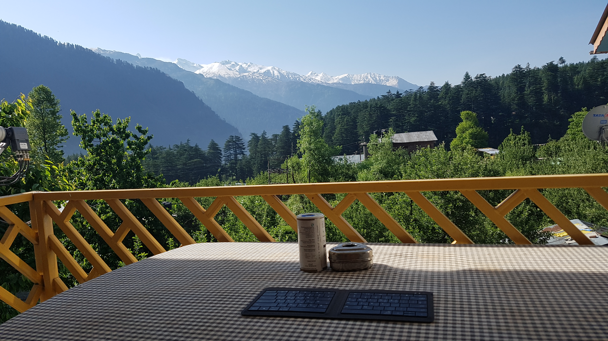
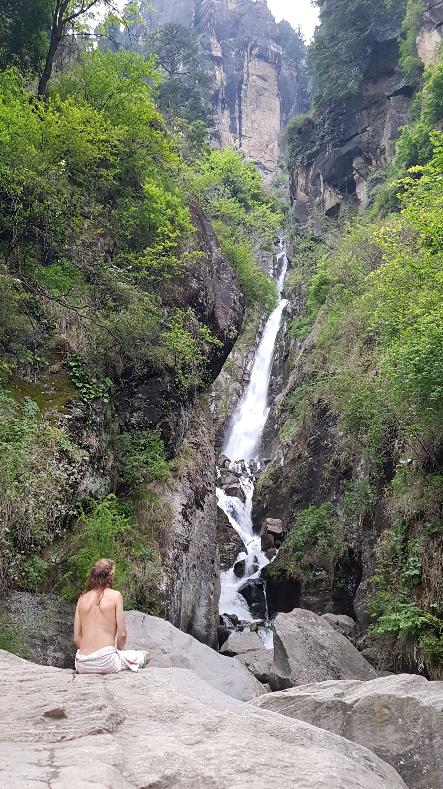

아름다운 자연과 음식 그리고 사람들이 있는 마날리
2017년 05월 09일
여행 D+36, 인도 D+7 마날리 D+3
아름다운 자연과 음식 그리고 사람들이 있는 마날리
이곳 Orchard House 에서 보는 풍경이 정말 끝내준다. 각 방마다 문앞에 테이블이 있는데 이곳에서 간단한 작업이나 책을 읽거나 하기 좋다. 그리고 그 자리에서 식사도 가능하다. 오늘 아침 6시즘 기상하고 누워서 책을 잠깐 보다가 나와서 이 테이블에서 했는데 아침식사를 앞에 보이는 경치를 보며 끝내주는 시간을 보냈다.
 Orchard house 방 앞에 테이블에서 아침식사를 기다리며 맞는 풍경. 기가막히다.
그리고 거의 10시까지 이 자리에 앉아있었다. 그냥 너무 좋아서 넉놓고 있다가 일기쓰다가 하니 시간이 금방 지나갔다. 옆방에는 어떤 영국인과 인도인 커플이 있었는데 나는 일기를 쓰느라 그들과 많이 대화하지는 못했다. 본인들이 가져온 BT스피커를 크게 틀어놔서 처음엔 불편했는데 나중에 좋은 음악이 나왔는데 아무래도 인도 음악인것 같았다. 그동안 들어보지 못했던 서구형 인도 음악이었다. 그래서 그들에게 뮤지션 몇명을 추천받았다. 인도 여행중에 한번 들어봐야겠다.
추천받은 인도 뮤지션 3명
Arjit sing (song kabira)
Shreya ghoshal
Ar rahman
오늘 방을 옮기게 될지도 모르니 짐을 대충 싸놓았다. 근데 이 방이 마음에 든다. 오늘부터 500루피라고 하는데 그냥 묶을까 싶다. 오늘은 뭘할까? 잘 모르겠다. (제발 다음날 계획은 전날에라도 짜자..) 일단 점심식사를 하고 이곳 마날리의 세 지역중 하나인 바시스트(바쉬쉿)에 다녀 오면 좋겠다 싶었다.
마날리는 송어가 유명하다고 해서 점심을 먹기위해 찾아간 식당에서 송어구이를 시켰다. 450루피로 약간 비쌌지만 이곳에서 한번은 먹어봐야할 음식이다. 매콤한 마살라 구이를 시켰다. 대충 레몬을 뿌린뒤 한조각을 입에 넣었는데 거업나 맛있었다. 송어가 이렇게 맛있는 생선이었다니! 진짜 너무 맛있어서 뼈까지 다 먹었다. 바삭바삭해서 뼈조차도 맛있었다.
점심식사로 먹은 송어구이 가게이름은 구글맵에 뜨지 않아서 기록하지 못했다. 그러나 마날리 어딜가나 송어구이는 다 맛있다고 한다.
식사를 하는 중에 갑자기 흥미로운 북소리와 웅성웅성 하는 소리가 들린다. 골목을 지나가는 행렬 소리였다. 뭔가 싶어서 가게 주인한테 물어봤더니 일종의 예배(제사)라고 한다. 인도에는 각 지역마다 예배 방식이 다른데 이곳 마날리에서는 이렇게 행진을 하며 예배를 한다고 한다. 인도를 여행할 때 이런 제사방식의 차이를 염두해서 관광해도 재미있을것 같다.
이곳 인도에는 유달리 행사와 의식이 많다. 인간은 왜 의식을 행할까? 갑자기 궁금해진 주제다. 의식이 인간에게 주는 과학적인 효과는 있을까? 진화적으로 필연적으로 인간은 의식을 행하도록 되었을까? 의식의 뿌리를 타고 가다보면 결국 종교를 만날것 같다. 의식의 근본은 바로 종교일것이다. 그렇다면 종교는 어떻게 탄생한걸까? 사피엔스에서 짧은 챕터로 대충 읽어보긴 했지만[1], 관련 내용을 다룬 한권짜리 책을 읽어보고 싶다는 생각이 들었다. 읽고싶은 책이 너무 많다. ([1] 사피엔스에 따르면 종교는 인류가 150명 이상의 거대한 집단을 이루기위해 필요했던 신화라고 함. 공동체 구성원이 같은 신화를 공유하는것이 집단을 더욱 크게 만드는데 유리했음. 종교가 없었다면 인류는 이렇게 거대해 지지 못했을것이고 발전하지 못했을 것임)
기분좋게 식사를 마치고 바시스트에 대한 대략적인 정보를 대충 직원에게 얻었다. 그곳에 가려면 릭샤를 이용해야 하는데 이곳 올드마날리에서는 갈 수 없고 뉴마날리 까지 가서 릭샤를 타야한다고 한다. 그래서 나는 또 삼나무 숲을 가로질러 뉴말날리로 가기로 했다. 다시 만난 삼나무숲은 여전히 멋지고 신비로웠다. 이렇게 뉴마날리로 갈때 잠깐 걷지말고 시간을 내서 두어시간 돗자리를 깔고 시간을 보내고 싶다.
뉴마날리에 도착해서 릭샤꾼들과 흥정 끝에 80루피로 바시스트 까지 갈수 있게 되었다. 처음에 몇몇 기사들이 트래픽 잼 때문에 갈수 없다고 하는데 무슨말인지 잘 이해하지 못했다. 릭샤가 목적지에 거의 도착했을때 무슨말인지 알 수 있었다. 그 많던 인도인 관광객들이 다 여기로 오나보다. 수많은 차들때문에 더이상 앞으로 갈 수가 없었다. 그래서 릭샤에서 내리기로 하고 목적지에 도착하지 못했으니 10더 깍아서 70루피로 그날 릭샤는 기분좋게 털어냈다.
갑자기 변이 마려워서 화장지를 구매한뒤, 좋아보이는 호텔 화장실에 들어가서 일을 봤다. 장 문제가 거의 해결된 듯 하다! 묽은 유체였지만 시원하게 처리한듯 하다. 바시스트에 뭐가 있는지 잘 몰라서 검색해봤는데 두가지만 알고 왔다. 핫 스프링과 jogni 폭포. 먼저 핫 스프링이 있다길래 가봤더니 별로였다. 그래서 바로 jogni폭포로 가기로 했다. 폭포 하나만 보기위해서 이곳에 오는것도 충분한 가치가 있다고 생각되었다.
이곳 숙소는 얼마인지 물어볼라고 했는데 여기 교통이 너무 불편해서 묶지 않기로 했다. 여기보다 올드 마날리가 좋은것 같다. 물론 올드마날리가 조금더 비싼데 맛있는 음식과 편의성 등을 고려했을때 올드마날리에서 묶는것이 훨씬 좋은것 같다. 그래서 대부분의 외국인 여행자들이 올드마날리에 묶는것 같다. (대부분 현지인들은 뉴마날리에 묶음. 왜 나뉜지는 모르겠음)
Jogni 폭포로 가려면 약 한시간정도 더 걸어 들어가야 한다. 가는길이 숲길이었는데 꽤 멋졌다. 시작부터 마음에 들기 시작했다. 가는 길에 점점 날이 흐려졌다. 천둥소리가 나기 시작했다. 아직 비는 오지 않았지만 나는 비 맞는게 좋다. 이런 숲에서 맞는 비는 얼마나 아름다울까!! 숲 반대편에는 멋진 설산이 펼쳐져 있는데 운좋게도 번개가 떨어지는 모습을 목격했다. 별의별 멋진 장면을 다 본다.
 폭포 가는길에 만난 삼나무 숲.
폭포 가는길에 만난 삼나무 숲.
보이는 제일 왼쪽 봉우리 위해서 보라색 번개줄이 떨어지는 절경을 목격했다.
폭포에 도착했다. 나는 폭포가 좋다. 떨어지는 물줄기는 너무 매력있어서 계속 넋놓고 보게 된다. 폭포를 볼 수 있는 길이 두가지였는데 하나는 높은길이었고 하나는 상대적으로 쉬운길 이었다. 일단 쉬운길로 가보기로 했다. 올라가는데 왜이렇게 힘이드는지 안나푸르나 다녀온사람이 맞나 싶었다. 아직 안나푸르나에서의 피로가 덜 풀린걸까? 폭포 앞에 도착했는데 역시 인도답게 누군가가 명상중이었다. 나도 그옆에 앉아서 강하게 지면을 때리는 물을 멍하니 보고있었다. 고어텍스 자켓을 가져왔으면 좋았을것 같다. 추워서 오랫동안 보기 힘들었다.
추워서 자리를 일찍 떳다. 더 어려운길을 가고싶은데 다리 상태가 좋지 못해 못갈것 같았다. 하지만 그 길로 올라가면 폭포를 더 가까이서 볼 수 있다. 고민하다가 몸을 사리기로 했다. 내 앞에는 어떤 덩치큰 남자애가 혼자 구경하고 돌아가던 길이었다. 나는 자꾸 뭔가 아쉬워서 그 친구에게 혹시 나랑 어려운길로 같이 가보지 않겠냐고 제안했다. 언덕에 길이 있는것 같은데 어떻게 가는지는 잘 모르겠다. 근데 몇몇 사람들이 올라가는걸로 봐서 길이 있는것 같다라고 말해줬다. 근데 그 친구가 흔쾌히 같이 가보자고 한다.
약간 과묵한 친구였다. 올라가는 내내 서로 별 말은 없었다. 실제로 올라가는 길이 그리 어렵지는 않았다. 구불구불하게 작은 길이 나있었다. 몇번 길을 헤메긴 했지만 어렵지 않게 폭포 앞에 도달할 수 있었다. 오자마자 오길 잘했다는 생각을 했다. 아무도 없는 폭포 앞에 우리는 떡하니 놓였다. 앉아서 구경하다가 사진도 찍었다. 조금씩 내리던 비가 점점 거칠어 지기 시작했다. 우리는 내려갈 수 밖에 없었다. 내려가면서 우리가 한 대화라곤 이름과 출신을 물어본 정도다. 이친구 이름은 조쉬이고 뉴질랜드에서 왔다고 한다. 뉴질랜드에서 투어 가이드일을 하는데 겨울시즌에는 일을하지 않고 여름시즌에만 일을하는데 그래서 인도를 2달동안 여행중이라고 한다.
 폭포앞에서 명상중인 사람
어려운 길로 올라가서 코앞에서 구경한 폭포. 한참을 구경하고 싶었는데 추워서 못함.
안나푸르나에서 혼자 잘모르는 코스에 올라가려다가 조난당할뻔 한 기억이있어서, 이친구에게 같이가자고 제안한 것이었다. 흔쾌히 같이 가주어서 고마웠다. 덕분에 더 좋은 경험을 했다. 내려가는 길에 조금조금 씩 대화를 했는데 나랑 같은 지역에서 묶고 있는것이 밝혀졌다. 비용절감을 위해 같이 택시를 타고 가면 어떻겠냐고 제안했다. 근데 이친구는 올드마날리에서 여기까지 걸어왔고 걸어서 갈 계획이라고 했다. 가는 길에 삼나무 숲을 거쳐서 갈수 있기 때문에 비오는 삼나무숲길이 한번 보고 싶어졌다. 그래서 나도 같이 걸어서 가기로 했다.
택시를 타지 않은것이 1000번 잘한일이었다. 인도인 관광객이 하도 많아서 그런지 내려가는 길 내내 차가 꽉차서 차들이 움직이지를 못하고 있었다. 택시를 탔으면 밤늦게나 집에 도착했을 것이다. 비를 맞으며 걸어서 조금 추웠지만 그래도 좋았다. 4년전 남미이후로 비맞는것을 좋아하게 되었다. 가다가 중간에 어떤 길거리 음식을 먹었는데 조그만 감자전? 같은 음식이었다. 근데 너무 맛있어서 아직도 기억에 남는다. 이름은 기억이 나지 않는다. 다른 길에서는 본적이 없던 음식이다. 조쉬도 나도 가던 길을 멈추고 이 음식을 먹은일은 훌륭한 아이디어였다는데에 동의했다.
거의 한시간 가량을 걸었다. 비오는 삼나무숲은 역시 기대를 저버리지 않았다. 하지만 비를 너무 맞아서 추웠다. 빨리 집에 가고 싶은 생각이 들었다. 다음에는 반드시 자켓을 들고다녀야겠다. 오늘 비가왔기 때문에 내일 만약 레프팅을 하면 더 재미있을것이다. 다행이 조쉬도 레프팅을 하고싶다고 한다. 그렇게 내일 레프팅도 같이 하기로 했다. 마날리에서는 이친구와 동행을 하게 될것같다.
드디어 올드 마날리에 도착한 우리는 투어회사에 들러서 레프팅 예약을 한뒤 숙소에서 씻고 7시에 같이 저녁을 먹기로 했다. 투어회사에서 아저씨가 비를 쫄딱 맞으며 jogni 폭포에서 걸어온 나를 보고 한국인 중에 너같이 걷는것 좋아하는 사람은 처음이라며 너는 조금 다른 사람같다고 해줬다. 기분이 엄청 좋았다. 그래서 나는 "당신말이 맞다. 나는 안나푸르나 200km 써킷트레킹을 노 포터 노가이드로 한사람이다"라고 신나서 주둥이를 털어 재껴줬다.
숙소에 도착해서 씻고 뜨거운물로 샤워도 하고 빨래를 하니 7시가 다되었다. 쉴 시간도 없이 저녁식사 장소로 향했다. 그러다가 여기 숙소 주인이 방을 옮겨야된다고 해서 옮겼는데 화장실도 있으면서 400루피짜리 저렴한 방으로 옮기게 되었다! 아싸. 온수는 나오지 않지만 공용 샤워장에서 샤워를 하면된다.
식당에서 나는 양고기 커리를 시켰다. 언제먹나 했던 양고기를 드디어 시켰는데 진짜 너무 맛있었다. 여기 음식은 왜이렇게 다 맛있는걸까? 점심에 먹었던 송어구이가 마날리에서 먹었던 1위였는데 방금 그 순위가 바꼈다. 양도 엄청 많고 양고기도 냄새 없이 부드럽다. 가격은 난 까지 포함해서 390루피였다.
처음에 대화가 별로 없었던 우리는 점점 많은 대화를 하기 시작했다. 역시 여행자들끼리 여행이라는 공통된 관심사가 있어서 대화가 잘 이루어지는것 같다. 다음에 갈 장소와 지나왔던 장소등 할얘깃거리가 무궁무진하게 많다. 이친구는 쉬는 시즌마다 인도에 찾아왔다고 한다. 1년에 한번씩 총 8년동안 인도에 왔다고 한다. 왜그렇게 인도가 좋냐고 물어봤는데 말이 빨라서 다 알아듣지는 못했다. 좋은 사람들 저렴하고 맛있는 음식 여유로운 분위기등이 인도에 계속 오게 했다고 한다.
우리는 바라나시로 주제를 옮겼다. 이친구도 바라나시에서 많은 충격을 받았는지 할 이야깃 거리가 많았다. 특히 내가본 사람 두개골 이야기를 해줬더니 엄청 흥미로워했다. 전에는 잘 몰랐는데 이게 엄청난 이야깃 거리였다. 평생 두고두고 할 말이생겼다. 조쉬는 바라나시에 8년동안 딱 한번 가봤는데 5일이면 본인에겐 충분한 경험이었고 다시 갈 생각은 없다고 한다. 약간 공감이 되었다. (그런데 이친구가 몇년전에 뉴질랜드에서 식장을 차렸는데 이름이 바라나시였다고 함.) 하지만 바라나시에는 너무 좋아서 2달 3달씩 머무는 사람도 많이 있다. 나는 다시 갈 수는 있지만 마날리 보다 더 좋다고 느끼진 못하겠다. 근데 분명 바라나시는 내가 경험한 도시중 가장 독특하고 이상하고 에너지가 넘치는 장소임은 분명했다.
8년동안 인도를 8번 방문한 조쉬. 인도에 대해서 많은 정보를 알고있었다.
일기를 써야하기 때문에 일찍 가려고 했지만 대화가 너무 즐거웠기 때문에 10시가 다되어 집으로 향했다. 내일 아침에 일찍일어나서 또 레프팅도 가야하기 때문에 빨리 쉬는게 좋을것 같았다. 오늘은 진짜 알차고 만족스러웠던 하루였다. 그냥 숙소나 까페에 처박혀 있지만 않으면 새로운 일들이 계속 펼쳐지는것 같다. 포카라에서는 그렇지 못했는데 이곳 마날리에서는 하루하루를 알차게 보내고 있는것 같다. 이런것이 점점 여행에 적응하고 있는 모습아닐까 싶다. 점점 좋아지고 있는 내 모습이 대견스러웠다.